Installing WebsitePanel Components One-by-One
WebsitePanel Enterprise Server
To install WSP Enterprise Server open WSPI, click "View Available Components" button and then "Install" link over "WebsitePanel Enterprise Server" row:
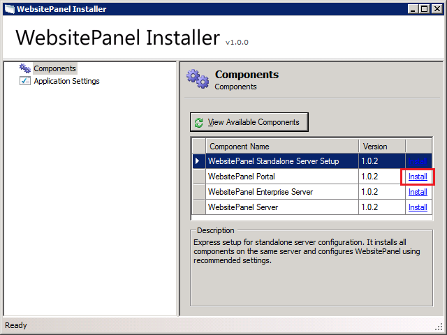
Click "Next" button to proceed to WSP ES installation wizard.
WSPI will check for minimum system requirements and if they are met "Next" button will be enabled:
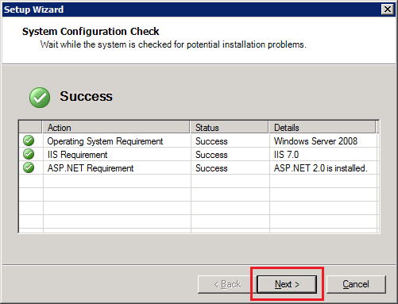
Click "Next" button to switch to the next wizard step:
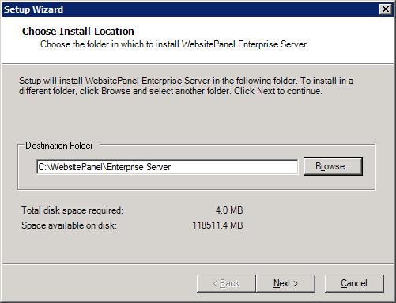
Specify folder on server hard drive to install WSP ES files and click "Next" button to go to the next step.
Specify WSP ES web site settings. If you are not going to expose Enterprise Server to external clients (3rd-party applications consuming ES web services) and WSP Portal will be installed on the same server we recommend keeping 127.0.0.1 as a web site IP address and default 9002 TCP port; otherwise you could select different IP address (from internal or external network pools) and TCP port for ES web site.
Click "Next" button to go to the next wizard step:
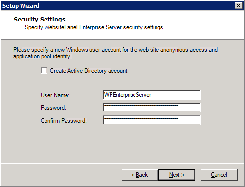
"Security Settings" step allows you to specify the name of user account that will be used as ES web site anonymous identity (IIS 6 only) and ES application pool identity (IIS 6 and IIS 7). There is an auto-generated password for this account already specified in "Password" field. It's GUID and strong enough to be discovered. Change password value if only you are going to manually modify web site or application pool settings later after ES installation. If you are installing WSP Enterprise Server in Active Directory environment you have an option to "Create Active Directory account"; otherwise local Windows account (SAM database) will be created.
WSP Enterprise Server application pool must be run under "weak" user account. By default WSPI creates an account which is a member of "IIS_WPG" (on IIS 6) or "IIS_IUSRS" (on IIS 7) group only.
For WSP Enterprise Server we recommend creating "local" account for tightened security.
Click "Next" to go to "Database Settings" wizard step:
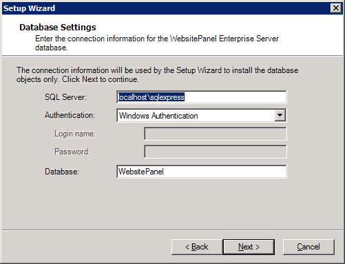
Specify SQL Server 2005 or 2008 instance name in "SQL Server" field. For default SQL Server Express edition installation you could type "(local)\SQLEXPRESS", select authentication mode and specify database name.
Please note that these database settings will be used during WSP upgrades, so make sure they could be used to access SQL Server over time.
Click "Next" button to go to "Administrator Password" step:
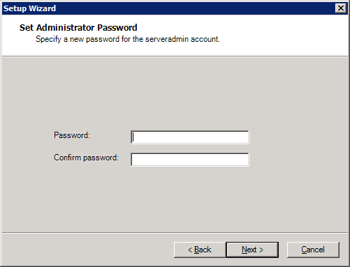
Specify password that will be assigned to "serveradmin" account. You use top-level "serveradmin" account to configure WebsitePanel installation and create resellers/customers.
Default "serveradmin" password pre-filled on this dialog is "serveradmin" (without quotes).
We strongly recommend to replace default "serveradmin" password with your own strong one.
Click "Next" button to start the installation of WSP Enterprise Server.
After ES setup is complete you will see the following dialog:
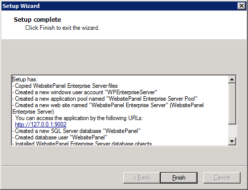
You could click ES URL and open it in the web browser to make sure it was properly installed:
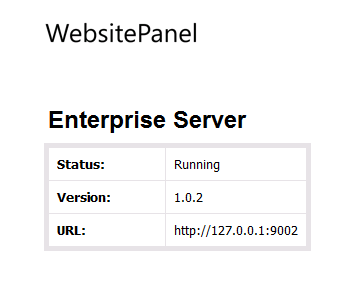
WebsitePanel Portal
To install WSP Portal open WSPI, click "View Available Components" button and then "Install" link over "WebsitePanel Portal" row:
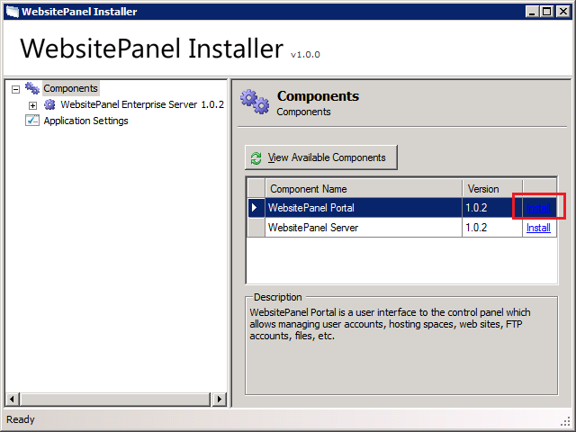
WSPI will check for minimum system requirements and if they are met "Next" button will be enabled:
On the “Choose Install Location” step specify folder on server hard drive to install WSP Portal files and click "Next" button to go to the next step.
Specify WSP Portal web site settings. The URL shown on this page will be used to access your control panel. If you have a free IP address assigned to the server then we recommend to dedicate it for control panel and specify "80" for the port; otherwise in the case selected IP is shared by several web sites we recommend you to leave default IP address and 9001 port.
Make sure the custom port selected for this web site (9001 in our case) is allowed on server Firewall.
Click "Next" button to go to the next wizard step:
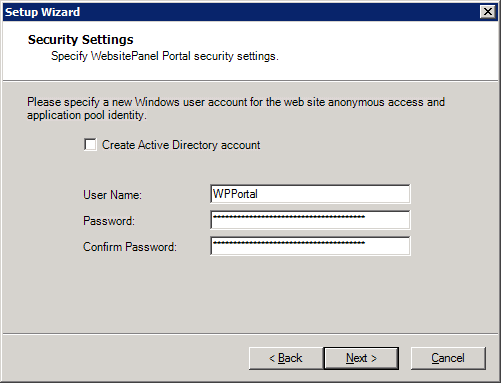
"Security Settings" step allows you to specify the name of user account that will be used as WSP Portal web site anonymous identity and WSP Portal application pool identity.
WSP Portal application pool must be run under "weak" user account. By default WSPI creates an account which is a member of "IIS_WPG" (on IIS 6) or "IIS_IUSRS" (on IIS 7) group only.
For WSP Portal we recommend creating "local" account for tightened security.
Click "Next" button to go to the next step:
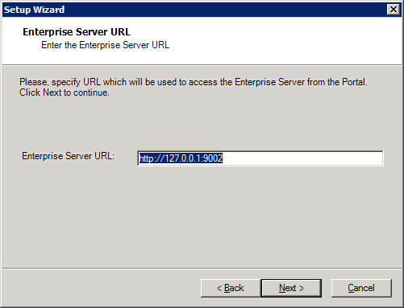
On this step you have to specify URL to WSP Enterprise Server application. For default WSP ES installation it's http://127.0.0.1:9002. To make sure WSP ES is accessible from the server where you are installing WSP Portal you could open its URL in the web browser.
Click "Next" button to start WSP Portal installation.
After WSP Portal setup is complete you could see the dialog with installation log:
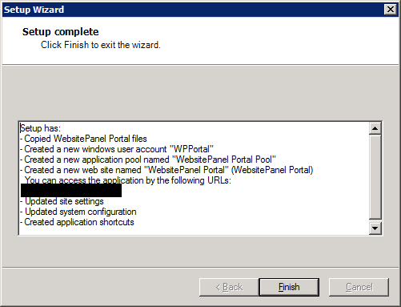
You could click Portal URL and open it in the web browser to make sure it was properly installed:
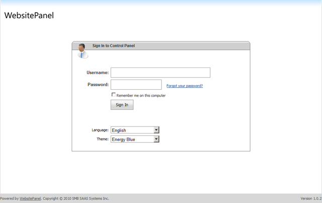
Try signing in under "serveradmin" (with appropriate password set during Enterprise Server installation) to make sure account home page could be accessed.
WebsitePanel Server
To install WSP Server open WSPI, click "View Available Components" button and then "Install" link over "WebsitePanel Server" row:
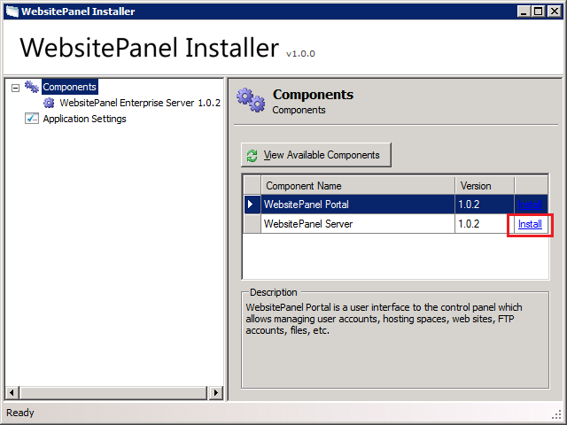
WSPI will check for minimum system requirements and if they are met "Next" button will be enabled:
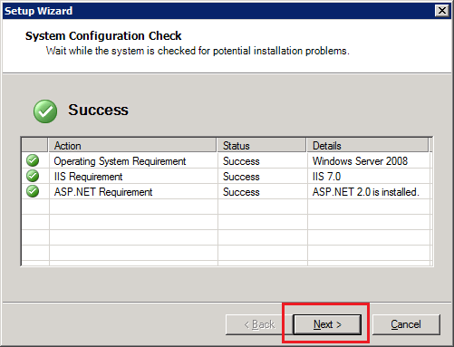
Specify folder on server hard drive to install WSP Server files and click "Next" button to go to the next step.
Specify WSP Server web site settings. If you are installing WSP Server on the same server with WSP Enterprise Server we recommend keeping 127.0.0.1 as a web site IP address and default 9003 TCP port; otherwise you could select different IP address (from internal or external network pools) and TCP port for Server web site.
Click "Next" button to go to the next wizard step:
"Security Settings" step allows you to specify the name of user account that will be used as WSP Server web site anonymous identity and ES application pool identity. There is an auto-generated password for this account already specified in "Password" field. It's GUID and strong enough to be discovered. Change password value if only you are going to manually modify web site or application pool settings later after Server installation. If you are going to control Active Directory from WebsitePanel and installing WSP Server in Active Directory environment you have an option to "Create Active Directory account"; otherwise local Windows account (SAM database) will be created.
WSP Server application pool runs under "strong" user account with administrative privileges. By default, WSPI creates account which is a member of local "Administrators" security group (for local mode) or "Domain Admins" security group (for AD mode).
Click "Next" button to finish WSP Server installation. After Server setup is complete you will see the following dialog with installation log:
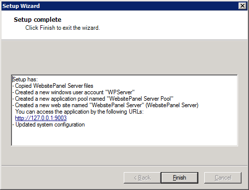
You could click Server URL and open it in the web browser to make sure it was properly installed:
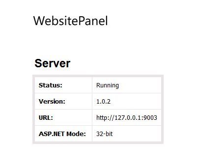
Troubleshooting Installation Issues
Could not start WebsitePanel Installer on Windows 2008
This might be due to enabled User Account Control (UAC). As a solution you could disable UAC or run WSPI in "elevated" mode by right clicking its shortcut and selecting "Run as Administrator".
Viewing WebsitePanel Installer Error Log
To view WSPI application log click "Application Settings" node in the left navigation menu and then click "View System Log" button:
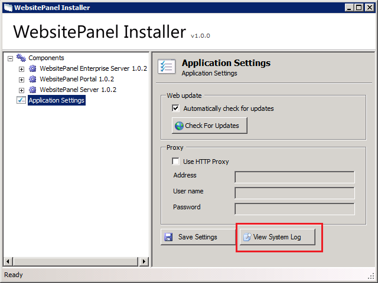
WSPI log will be opened in Notepad.
"Unable to generate a temporary class" or "Root element is missing" error message while opening WSP Portal
This error is related to Windows Server 2003 platform. This error means that IIS_WPG group doesn't have Read and List Folder Contents permissions on C:\Windows\Temp folder on the server where WSP Portal is running. Just add IIS_WPG group with Read and List Folder Contents permissions on the mentioned folder on the WSP Portal server.
Please note that you should grant permissions to the domain IIS_WPG group if WSP Portal is running on domain controller or local IIS_WPG group in other cases.
Also note that it is good practice to grant those permissions to IIS_WPG on C:\Windows\Temp folder (or another folder in case of non-standard Environment Variables settings) on all servers running any WSP component.
Web App Gallery cannot install ASP.NET applications with SQL Server database
Open SQL Server service settings in control panel and change security mode to "SQL Server Authentication". Specify "sa" username and its password and click "Update" button to save changes.
WebsitePanel cannot create MailEnable mailbox on Windows 2003 x64 or Windows 2008 x64 editions
MailEnable and Merak mail server software are 32-bit applications providing COM API to WebsitePanel. If WSP Server component works in 64-bit mode it cannot instantiate 32-bit COM objects.
To solve this issue you have to switch ASP.NET on the machine where WSP Server is installed to 32-bit mode.
Switching ASP.NET to 32-bit mode on Windows 2003 x64
To switch IIS 6 and ASP.NET into 32-bit mode open command line:
Start -> Run... -> cmd
Then switch to c:\Inetpub\AdminScripts folder:
cd c:\Inetpub\AdminScripts
and run the following command:
cscript.exe adsutil.vbs set W3SVC/AppPools/Enable32BitAppOnWin64 "1"
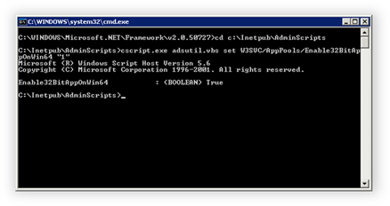
To enable ASP.NET on IIS in command line interface switch to C:\WINDOWS\Microsoft.NET\Framework\v2.0.50727 folder and run aspnet_regiis program with “i” switch:
cd C:\WINDOWS\Microsoft.NET\Framework\v2.0.50727
C:\WINDOWS\Microsoft.NET\Framework\v2.0.50727>aspnet_regiis -i
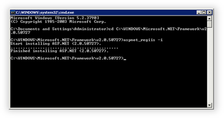
Now as ASP.NET is enabled for IIS you should go to Internet Information Services (IIS) Manager and allow “ASP.NET v2.0.50727 (32-bit)” extension in “Web Service Extensions” section:
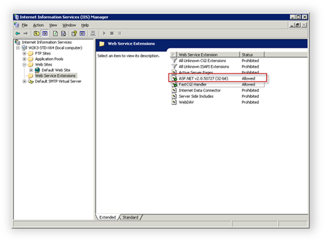
You could find more information regarding this topic in the following Microsoft KB:
http://support.microsoft.com/default.aspx/kb/894435
Switching ASP.NET to 32-bit mode on Windows 2008 x64
To switch WSP Server application to 32-bit mode open IIS manager.
Click "Application Pools" in the left navigation menu and then open "Advanced Settings" dialog of "WebsitePanel Server Pool".
Set "Enable 32-bit Applications" to "True" and click "OK" button to save changes.